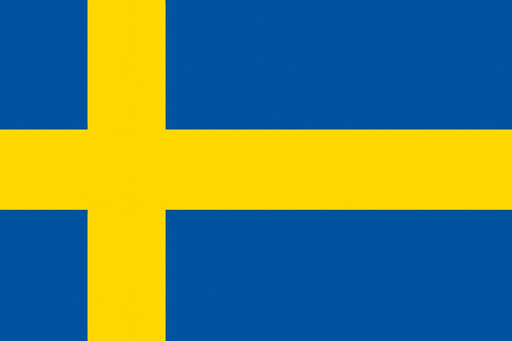
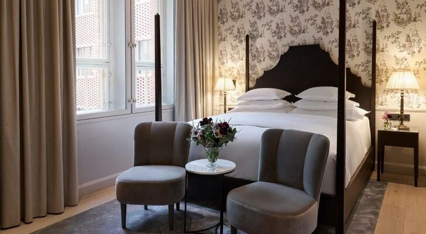

Suecia, la joya escandinava, es un país que combina paisajes impresionantes con una rica historia y una vibrante vida urbana. Desde los fiordos del norte hasta las islas del archipiélago de Estocolmo, cada rincón ofrece una experiencia única. Suecia (Sverige) es un país escandinavo del norte de Europa, organizado como una monarquía parlamentaria y miembro de la Unión Europea. Su capital es Estocolmo. Con más de 10 millones de habitantes y una superficie de 450.295 km², es uno de los países más extensos del continente. Destaca por su alto nivel de vida, desarrollo humano, educación gratuita y sistema de bienestar. Tiene una economía avanzada, basada en la industria, la tecnología y la sostenibilidad ambiental. Históricamente, fue una potencia europea durante el siglo XVII con el Imperio Sueco, y desde 2024 forma parte de la OTAN. Suecia es conocida por su neutralidad en conflictos internacionales, su compromiso con los derechos humanos y su liderazgo en innovación y energías renovables
Suecia ofrece opciones para todos los gustos: hoteles boutique en el centro de Estocolmo, casas rurales en Småland, chalets junto a lagos y apartamentos modernos en Malmö. La
calidad y el diseño son siempre protagonistas.

No puedes irte sin probar las albóndigas suecas, el salmón marinado o el “fika”, la tradicional pausa para el café con bollería. Restaurantes como Frantzén en Estocolmo o los mercados de Gotemburgo ofrecen experiencias gastronómicas inolvidables.